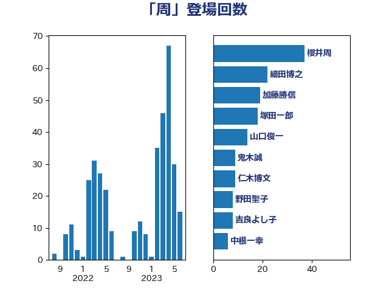

単語「周」

| 櫻井周 | 立憲民主党 | 37 回 |
| 細田博之 | 自由民主党 | 22 回 |
| 加藤勝信 | 自由民主党 | 19 回 |
| 塚田一郎 | 自由民主党 | 18 回 |
| 山口俊一 | 自由民主党 | 14 回 |
| 鬼木誠 | 立憲民主党 | 9 回 |
| 仁木博文 | 無所属 | 9 回 |
| 野田聖子 | 自由民主党 | 8 回 |
| 吉良よし子 | 日本共産党 | 8 回 |
| 中根一幸 | 自由民主党 | 6 回 |
| 吉田久美子 | 公明党 | 5 回 |
| 長島昭久 | 自由民主党 | 4 回 |
| 西村康稔 | 自由民主党 | 4 回 |
| 平口洋 | 自由民主党 | 4 回 |
| 高橋千鶴子 | 日本共産党 | 3 回 |
| 長友慎治 | 国民民主党 | 3 回 |
| 赤嶺政賢 | 日本共産党 | 3 回 |
| 自見はなこ | 自由民主党 | 3 回 |
| 根本匠 | 自由民主党 | 3 回 |
| 城井崇 | 立憲民主党 | 3 回 |
| 吉田統彦 | 立憲民主党 | 3 回 |
| 上野賢一郎 | 自由民主党 | 3 回 |
| 高木毅 | 自由民主党 | 2 回 |
| 青木愛 | 立憲民主党 | 2 回 |
| 青山大人 | 立憲民主党 | 2 回 |
| 青山周平 | 自由民主党 | 2 回 |
| 鈴木敦 | 国民民主党 | 2 回 |
| 鈴木俊一 | 自由民主党 | 2 回 |
| 金村龍那 | 日本維新の会 | 2 回 |
| 藤岡隆雄 | 立憲民主党 | 2 回 |
| 葉梨康弘 | 自由民主党 | 2 回 |
| 米山隆一 | 立憲民主党 | 2 回 |
| 竹内譲 | 公明党 | 2 回 |
| 石井浩郎 | 自由民主党 | 2 回 |
| 田村智子 | 日本共産党 | 2 回 |
| 田中健 | 国民民主党 | 2 回 |
| 玉木雄一郎 | 国民民主党 | 2 回 |
| 牧島かれん | 自由民主党 | 2 回 |
| 渡辺周 | 立憲民主党 | 2 回 |
| 海江田万里 | 立憲民主党 | 2 回 |
| 浜田靖一 | 自由民主党 | 2 回 |
| 柿沢未途 | 無所属 | 2 回 |
| 林芳正 | 自由民主党 | 2 回 |
| 東徹 | 日本維新の会 | 2 回 |
| 山本香苗 | 公明党 | 2 回 |
| 大西英男 | 自由民主党 | 2 回 |
| 北村経夫 | 自由民主党 | 2 回 |
| 伊波洋一 | 無所属 | 2 回 |
| 高木かおり | 日本維新の会 | 1 回 |
| 高市早苗 | 自由民主党 | 1 回 |
| 須藤元気 | 無所属 | 1 回 |
| 音喜多駿 | 日本維新の会 | 1 回 |
| 阿部弘樹 | 日本維新の会 | 1 回 |
| 鎌田さゆり | 立憲民主党 | 1 回 |
| 野間健 | 立憲民主党 | 1 回 |
| 重徳和彦 | 立憲民主党 | 1 回 |
| 赤羽一嘉 | 公明党 | 1 回 |
| 谷公一 | 自由民主党 | 1 回 |
| 美延映夫 | 日本維新の会 | 1 回 |
| 緒方林太郎 | 無所属 | 1 回 |
| 笠井亮 | 日本共産党 | 1 回 |
| 穀田恵二 | 日本共産党 | 1 回 |
| 稲富修二 | 立憲民主党 | 1 回 |
| 福田昭夫 | 立憲民主党 | 1 回 |
| 神谷裕 | 立憲民主党 | 1 回 |
| 石川香織 | 立憲民主党 | 1 回 |
| 白石洋一 | 立憲民主党 | 1 回 |
| 牧原秀樹 | 自由民主党 | 1 回 |
| 湯原俊二 | 立憲民主党 | 1 回 |
| 渡辺孝一 | 自由民主党 | 1 回 |
| 浜口誠 | 国民民主党 | 1 回 |
| 榛葉賀津也 | 国民民主党 | 1 回 |
| 松野博一 | 自由民主党 | 1 回 |
| 松沢成文 | 日本維新の会 | 1 回 |
| 松本尚 | 自由民主党 | 1 回 |
| 松本剛明 | 自由民主党 | 1 回 |
| 松原仁 | 立憲民主党 | 1 回 |
| 星北斗 | 自由民主党 | 1 回 |
| 後藤祐一 | 立憲民主党 | 1 回 |
| 広瀬めぐみ | 自由民主党 | 1 回 |
| 島村大 | 自由民主党 | 1 回 |
| 岡本あき子 | 立憲民主党 | 1 回 |
| 山本剛正 | 日本維新の会 | 1 回 |
| 山岸一生 | 立憲民主党 | 1 回 |
| 小熊慎司 | 立憲民主党 | 1 回 |
| 小倉將信 | 自由民主党 | 1 回 |
| 塩村あやか | 立憲民主党 | 1 回 |
| 吉田はるみ | 立憲民主党 | 1 回 |
| 勝部賢志 | 立憲民主党 | 1 回 |
| 伊藤俊輔 | 立憲民主党 | 1 回 |
| 伊佐進一 | 公明党 | 1 回 |
| 三ッ林裕巳 | 自由民主党 | 1 回 |
| たがや亮 | れいわ新選組 | 1 回 |